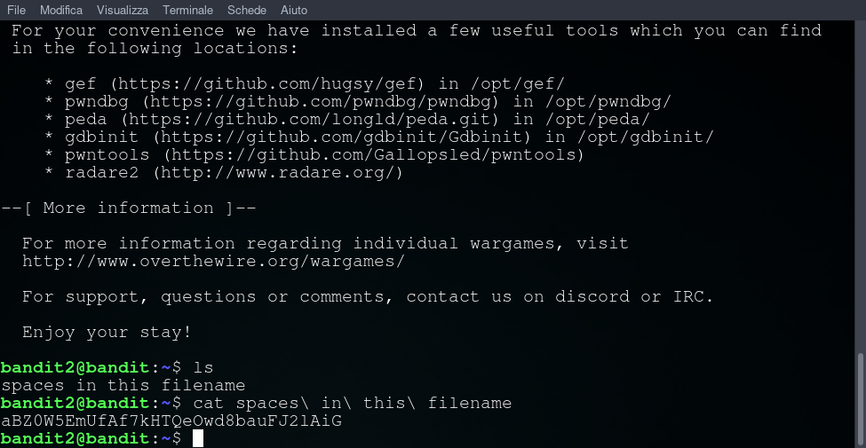

Obiettivo di livello
La password per il livello successivo è memorizzata in un file chiamato spaces in this filename che si trova nella directory home.
Comandi di cui potresti aver bisogno per risolvere questo livello
ls, cd , cat , file , du , find
Materiale di lettura utile
Soluzione livello 2
ci connettiamo con ssh alla porta 2220 e user bandit2 con passowrd del livello 0
oppure scarichiamo il nosto script da Github e avviamolo con python3 ssh_bandit.py bandit2
attraverso il comando cat indichiamo il file con spazi attraverso il carattere \
passwd: aBZ0W5EmUfAf7kHTQeOwd8bauFJ2lAiG